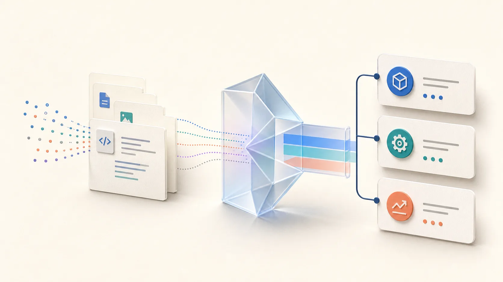

Audit
Read repository clues locally and pair them with the goal you state.
project + goalOpen source · project-scoped · preview before apply
Codesemble audits your project, proposes a small evidence-backed team, and shows the exact project diff before anything changes.

The useful part
No fixed roster. No hidden setup. You see why each role appears and what will be written.
Read repository clues locally and pair them with the goal you state.
project + goalTurn the work into the smallest complete set of useful roles.
work → capabilitiesCompare Focused, Recommended, and Extended options with evidence.
options → exact planApprove the fresh plan, then verify or roll it back from the project.
human decision → filesIllustrative example
Change the project clue or coverage level. The example is a model of the explanation Codesemble gives you—not a fixed promise.
An existing test boundary gives the compiler a concrete validation owner.
Recommended · required work plus independent verification
The catalog is a capability library. The project and goal decide the roles.
Control stays visible
Generated specialists are available capabilities, not an always-running swarm. The primary thread delegates bounded work and owns the final result.
Preview first. Audit and planning are read-only.
Confirm exactly. Apply requires a fresh plan and human approval.
Recover cleanly. Doctor and rollback preserve project-local control.
AGENTS.mdorchestration guidance.codex/agents/<role>.tomlnative specialists.codex/config.tomloptional worker limit.codex/codsemble/manifest.jsonteam ownership.codex/codsemble/transactions/rollback historyThe plan names roles, instructions, configuration, and every managed path. Apply rechecks the exact plan and refuses stale project state.
Start with your project
Codesemble is project-local. It does not edit your personal Codex settings or publish anything for you.
codex plugin marketplace add VAMFI/codsemble --ref fc247152961c25e79b525a969806991f499a2bac
codex plugin add codsemble@codsembleThen ask: $codsemble:initialize-team
Keep exploring
It is a library of reusable capability primitives, not a roster or team-size target. Codesemble dynamically selects only roles justified by the repository and goal.